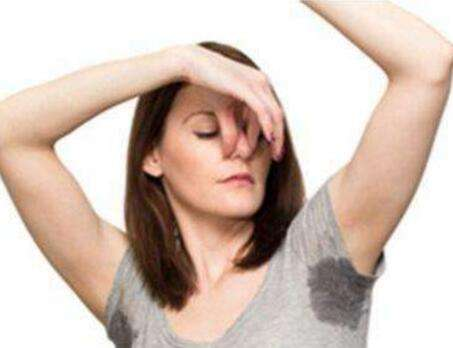

人体的汗腺分为两种，一种小汗腺大概占9成，排汗较稀，一般是没有味道的。另一种大汗腺(又称顶浆腺)，只集中分布在腋下，胯下，乳晕，外耳道里，排出的汗里还含各种蛋白质和脂肪酸，这才与狐臭相关。
大汗腺分泌物本来也是不臭的，是分泌物被体表的细菌分解以后，生成各种不饱和脂肪酸，才有了臭味。

这个时侯就有人要问了，那些有狐臭的人，是真的闻不到自己的味道吗?
有句老话说，“身在其中，不知其臭”说得就这个道理。有些狐臭的患者习惯了自己的味道，可能并不知道那是狐臭，对狐臭的异味也就不那么敏感了。其次，有些人的狐臭不是特别浓重，偶尔在活动时才散发出味道，自身就不会特别在意了。
那么狐臭还有哪些特征：
1、主要发生在腋下，易出汗，出汗后会散发难闻的气味。
2、狐臭在夏季时候表现最为明显，天气越热，气味越重。
3、腋下多汗，且汗液发黄、发粘，经常染黄衣服。
4、狐臭症状较严重患者，常常伴有油耳朵，耳屎油腻、发粘。